3.教务管理员用户操作
教务管理员部分主要有个人中心、测试管理、论坛管理、资源管理、教务管理、机构管理、用户管理、教务统计等八个模块，主要用于教务管理员用户对教师用户以及学生用户的教学管理，资源管理，用户管理，交流管理，测试管理，机构管理以及通知消息的接收和发送等。
教务管理员个人中心由两个部分组成：个人中心，消息中心。个人中心主要是显示教务管理员用户需求量高的两个模块（最新通知、近期资源更新），而消息中心主要起到显示教务管理员用户所有的消息通知以及教务管理员发送通知等作用。
教务管理员登录系统后，默认进入教务管理员个人中心。个人中心主要包括：最新通知、近期资源更新等。教务管理员个人中心界面如图3-1所示：
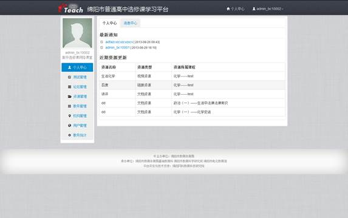
图3-1 个人中心－个人中心
在个人中心一级栏目中选择二级栏目消息中心即可进入消息中心。消息中心主要包括：教务员管理员所有的通知消息。与教师、学生用户不同的是，教务管理员有发送通知消息的权限。消息具体信息和学生、教师部分相似，在此就不一一列举了，教务管理员消息中心界面如图3-2所示：
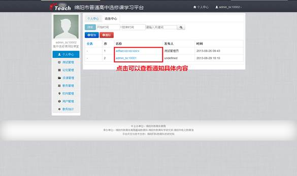
图3-2 个人中心－消息中心
点击“增加”可以发送新的消息，发送消息时应选择发送消息的对象（教师、学生），设置中的置顶天数若不置顶可以不必填写。教务管理员有权限删除自己发送的通知。教务管理员发送消息中心界面如图3-3所示：
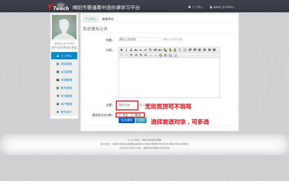
图3-3 个人中心－消息中心－发送消息
测试管理由四个二级栏目组成：课程测试管理，题库管理，试卷管理，成绩管理。题库管理是放在第一位的，首先教师需要添加题库才能构成试卷；其次是试卷管理，试卷管理分自动组卷和手动组卷，这样合成了一份份试卷；接下来的课程测试管理，这张试卷什么时候考试，怎么考，都有课程测试管理来决定。最后成绩管理很明显是对学生的成绩进行管理。整个测试管理模块与教师用户部分的测试管理相同，这里引用教师测试管理部分演示。
题库管理主要是用于添加、批量导入、修改教师所出的测试题目。题库管理如图教师—1所示：
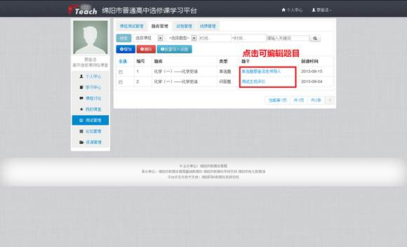
图 教师-1 测试管理－题库管理
题库管理可以添加试题、编辑试题、也可以批量导入试题。添加试题如图 教师-2所示，编辑试题如图 教师-3 所示：
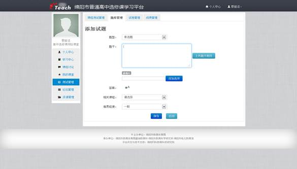
图 教师-2 测试管理－题库管理—添加题目
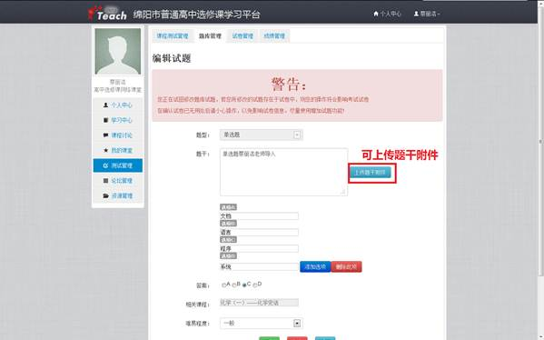
图 教师-3 测试管理－题库管理—编辑题目
试卷管理分手动组卷和自动组卷。手动组卷即是教师手动添加试卷，自动组卷则是由电脑随机添加试题。试卷管理主界面如图 教师-4所示：
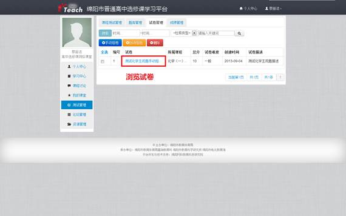
图 教师-4 测试管理－试卷管理
手动组卷主要针对有多种类型题目的考试，这里需要教师灵活处理所有的题目，手动组卷无疑提高了组卷的灵活性。手动组卷步骤如图 教师-5所示：
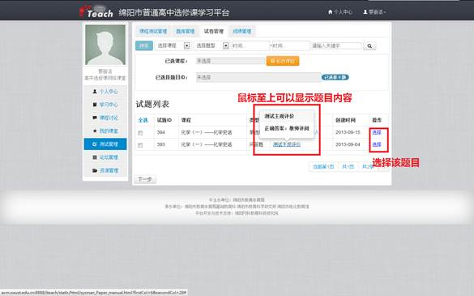
图 教师-5 测试管理－试卷管理－手动组卷
用下拉框选择课程后，系统会自动填充选择已选课程。在试题列表中选择题目后，已选题目ID会自动录入，将鼠标移至试题列表的题目处，可以查看题目具体内容。确认这些信息后，可以进行下一步，填写试卷名称、描述、单选分数、难易程度等信息，如图 教师-6所示：
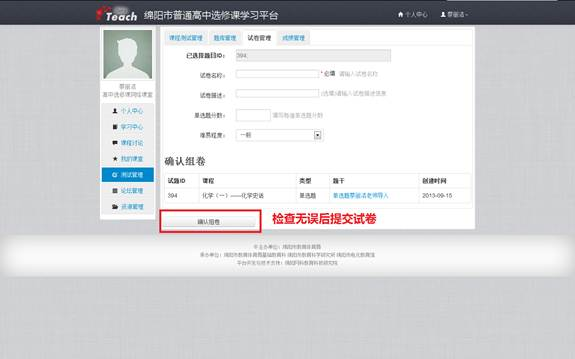
图 教师-6 测试管理－试卷管理－手动组卷－确认组卷
自动组卷主要针对有单一类型题目的考试，这里可以利用计算机协助选择题目，自动组卷无疑提高了组卷的高效性。自动组卷步骤如图 教师-7 所示：
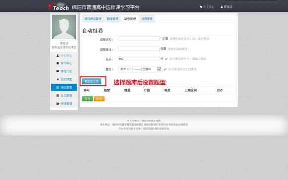
图 教师-7 测试管理－试卷管理－自动组卷
选择题目类型具体形式由图 教师-8所示，设置完成后就可以自动组卷了。
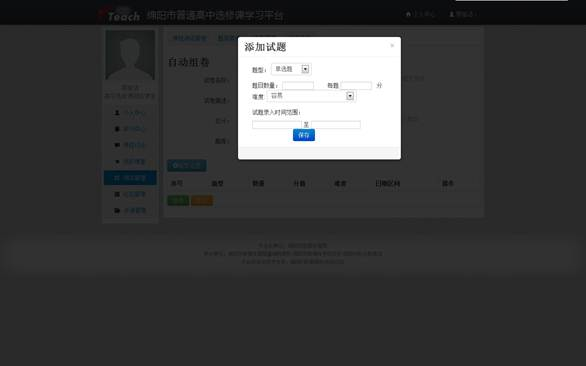
图 教师-8 测试管理－试卷管理－自动组卷－添加试题
课程测试管理是针对一组试卷何时开始考试、考试时长的等因素来进行管理。教师可以添加、编辑、删除课程测试信息等。课程测试管理首界面如图 教师-9 所示：
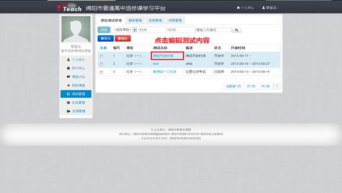
图 教师-9 测试管理－课程测试管理
添加操作由图 教师-10所示：
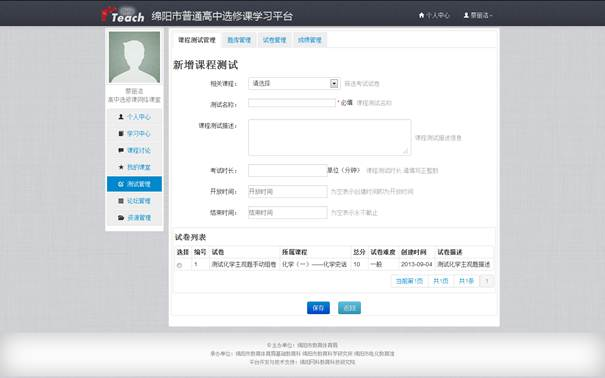
图 教师-10 测试管理－课程测试管理－添加课程测试
编辑操作由图 教师-11 所示：
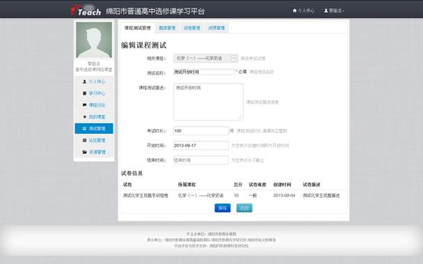
图 教师-11 测试管理－课程测试管理－编辑课程测试
成绩管理是教师针对自己所教授的所有学生的成绩信息的管理，有助于教师了解每个学生的学习情况。成绩管理主界面由图 教师-12所示：
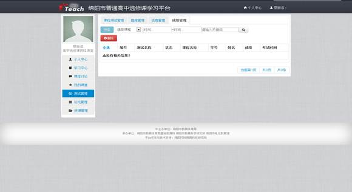
图 教师-12 测试管理－成绩管理
教务管理员测试管理页面如图3-4所示：
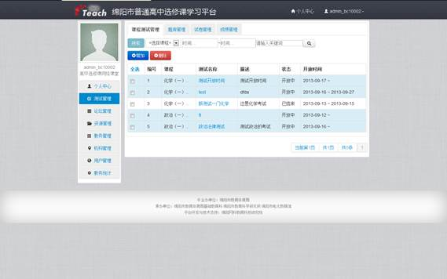
图3-4 测试管理
教务管理员的论坛管理不完全同于教师对于论坛的管理，其中有两个二级栏目：课程讨论管理、论坛管理。方便了教务管理员对于区域内论坛各项信息的管理。
课程讨论管理可以执行所管理机构（学校或区域）的讨论置顶或不置顶，标记为精品或取消精品标记，删除讨论的等操作。其中课程讨论管理的具体情况和教师部分中的课程讨论管理相同，这里引用教师管理课程讨论为例子。教师课程讨论管理如图 教师-10所示：
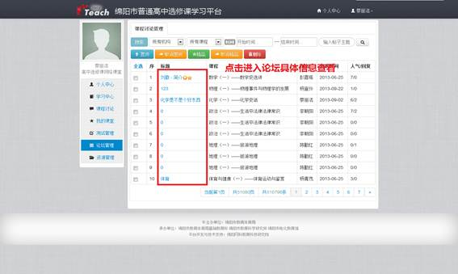
图 教师-10 论坛管理－课程讨论管理
点击标题可以进入课程讨论的具体信息里面查看，也可以进行管理操作。具体内容页面由图 教师-11所示：
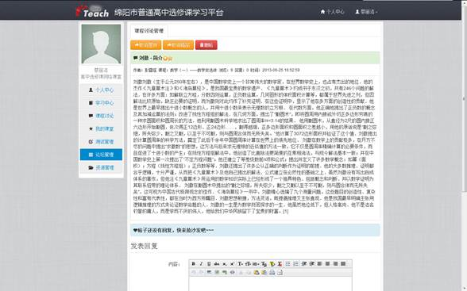
图 教师-11 论坛管理－课程讨论管理具体内容
教务管理员课程讨论管理如图 教师-12所示：
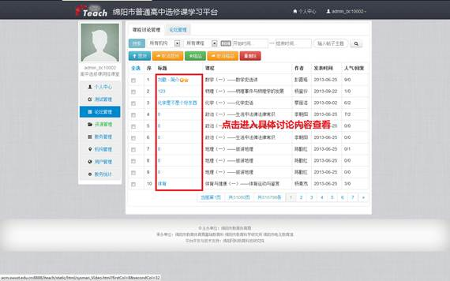
图 教师-12 论坛管理－课程讨论管理
论坛管理可以管理所管理区域内的论坛话题开启或者关闭。这里根据机构、课程名称来查询筛选。论坛管理方便了教务管理员对于论坛讨论的整体管理。教务管理员论坛管理如图3-6所示：
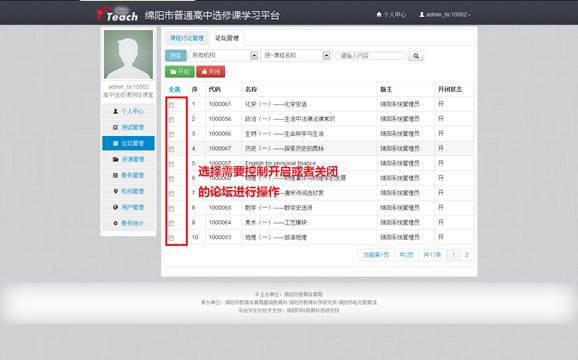
图3-6 论坛管理－论坛管理
教务管理员的资源管理是针对所有上传的给学生授课的所需资源进行的管理，包括对视频的管理、文档的管理、链接的管理。与教师部分不同的是，教务管理员不必对课程的章节内容进行管理。教务管理员对资源的管理方便了对于区域教学资源的管理控制，便于区域资源共享。由于视频管理、文档管理、链接管理这三个部分的具体操作与教师部分完全相同，这里以教师管理课程资源部分来举例。
视频资源管理主要是针对提供给学生学习观看的教学视频的资源，由各任课老师负责管理各自课程的视频资源，包括添加、视频上传、编辑、删除等操作。便于学生学习使用，观看或下载。视频管理主界面由图 教师-13所示：
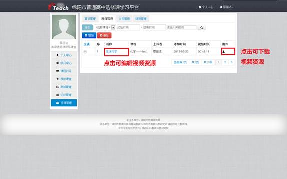
图 教师-13 资源管理－视频管理
可以添加视频资源，添加步骤：填写视频名称、选择上传视频资源（注：视频格式只能是flv）、选择视频所属科目、填写资源描述，具体界面由图 教师-14所示：
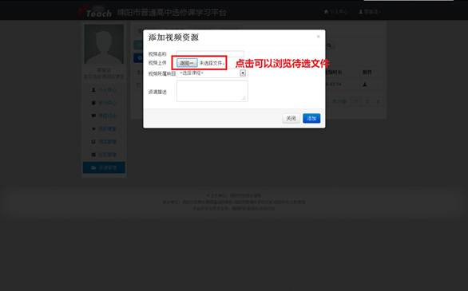
图 教师-14 资源管理－视频管理－添加视频资源
点击视频资源主界面标题即可编辑视频资源，编辑步骤：修改需要修改的部分，如需更改视频资源上传资源即可；若不需更改视频资源，则不用上传资源（注：视频格式只能是flv），上传视频完成后会返回“上传成功”，此时才可以进行添加视频资源信息的确认，具体界面由图 教师-15所示：
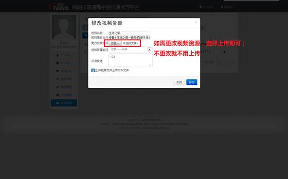
图 教师-15 资源管理－视频管理－编辑视频资源
文档资源管理主要是针对提供给学生下载学习的教学文档的资源，由各任课老师负责管理各自课程的文档资源，包括添加、上传文档、编辑、删除等操作。便于学生下载阅读。文档管理主界面由图 教师-16所示：
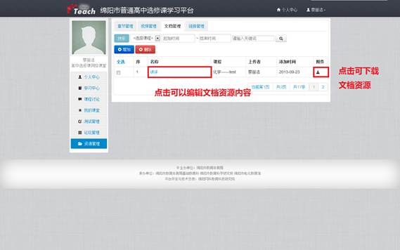
图 教师-16 资源管理－文档管理
其添加文档、编辑文档、删除文档操作和管理视频资源相同，这里就不一一列举了。注意：只能添加txt、doc、xls、pdf、exe、jpg等文档文件上传；上传文档完成后会返回“上传成功”，此时才可以进行添加文档资源信息的确认。
链接资源管理主要是针对提供给学生网上链接学习的教学链接的资源，由各任课老师负责管理各自课程的链接资源，包括添加、编辑、删除等操作。便于学生链接到相应网站阅读或学习。链接管理主界面由图 教师-17所示：
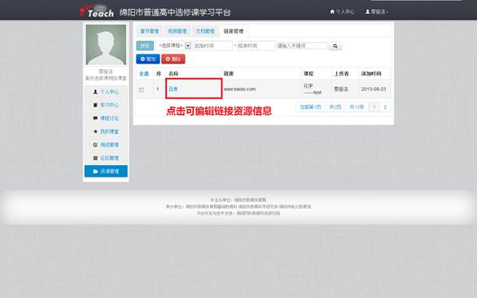
图 教师-17 资源管理－链接管理
教务管理员资源管理如图 教师-18所示：
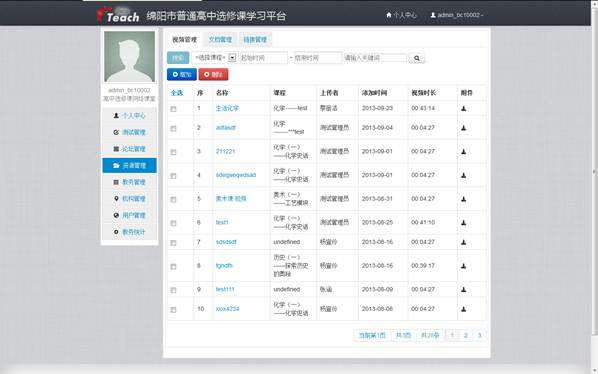
图 教师-18 资源管理
教务管理部分是对于各类教务事务的管理，具体包括六个方面：课程类别管理、课程管理、课程审批、考核方式管理、选课时间管理、辅导教师管理。建立考核方式管理，辅导教师管理结合课程类别管理、课程管理，最后进行课程审批、选课时间管理。
课程类别主要设定类别代码、类别名称、类别描述、创建人、创建时间、类别状态（开启/关闭）。主要为后期课程管理做选择类别的支持。教务管理员课程类别管理如图3-8所示：
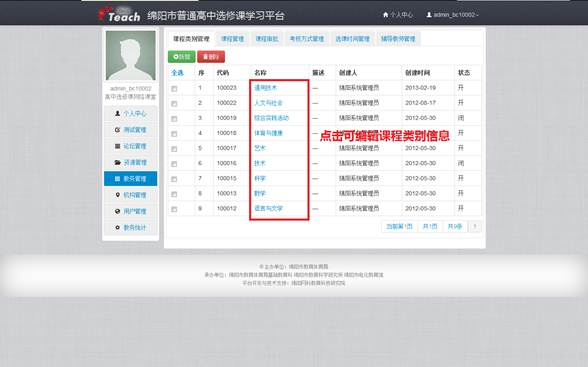
图3-8 教务管理－课程类别管理
点击“新增”可以新建课程类别，如果新添加的课程中没有可选类别就应先新建课程类别，新建课程类别如图3-9所示：
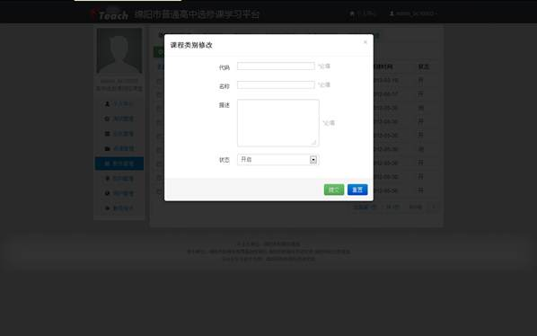
图3-9 教务管理－课程类别管理－新建课程类别管理
点击名称可以编辑已有课程类别，编辑课程类别如图3-10所示：
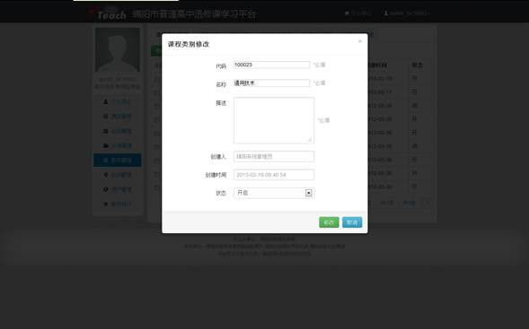
图3-10 教务管理－课程类别管理－编辑课程类别管理
课程信息主要设定课程代码、课程名称、课程学分、时间安排、课程类别选择、考核方式选择（若没有可进入考核方式新建）、主讲教师、公开状态（课程是否公开）、课程描述、课程封面图片等内容。教务管理员课程管理如图3-11所示：
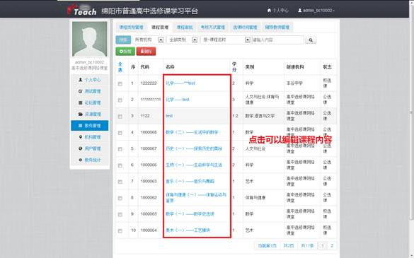
图3-11 教务管理－课程管理
点击“新增”可以新建课程信息，如果新添加的课程中没有可选类别就应先新建课程类别，如果没有合适的考核方式可以先新建考核方式。新建课程信息如图3-12所示：
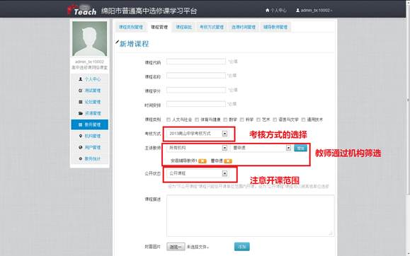
图3-12 教务管理－课程管理－新建课程
点击名称可以编辑已有课程信息，注意课程状态是否开放，只有开放状态的课程才会在选课信息中出现，编辑课程信息如图3-13所示：
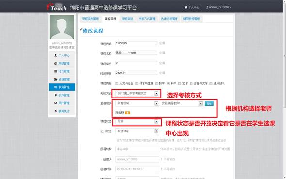
图3-13 教务管理－课程管理－编辑课程
课程审批主要通过让教务管理员检查 课程代码、课程分类、课程名称、课程描述、开课时间、申请者、课程状态、公开状态等信息来审批该课程是否可以通过，审批过程中可以根据需要更改课程状态以及公开状态。审批结果有三类：通过、拒绝、暂不审核。只有通过的课程才可以开放。教务管理员课程审批如图3-14所示：
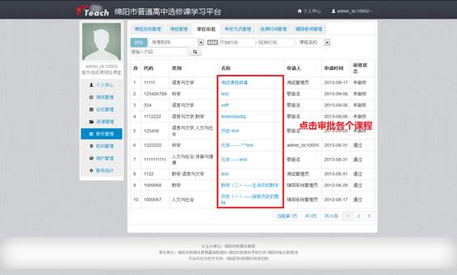
图3-14 教务管理－课程审批
课程审批时，点击课程名称即可审批该课程。审批具体内容如图3-15所示：
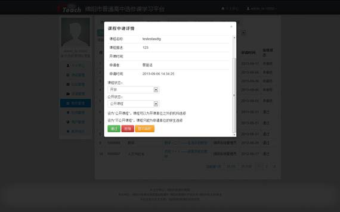
图3-14 教务管理－课程审批－审批具体内容
考核方式管理主要通过让教务管理员设置教师辅导、交互次数、视频教学、考试分数、集中学习、教师评分等六项的指标来构建每个区域机构或学校单位的考核方式。教务管理员考核方式管理如图3-15所示：
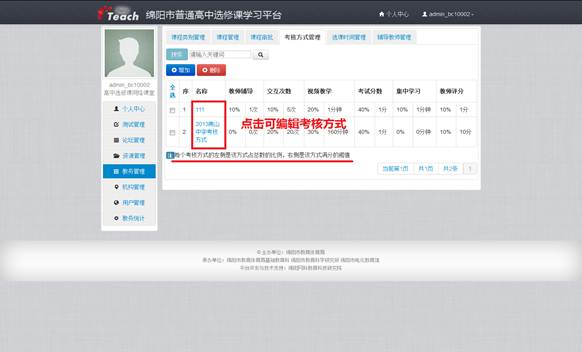
图3-15 教务管理－考核方式管理
点击“新增”可以新建考核方式，填写的时候注意考核内容部分：右侧栏是该项考核值占总考核值的比例，该项不需要时比例可以为零；左侧栏是考核阈值，若用户被考核值达到阈值就给予阈值所示的满分。新建考核方式信息如图3-16所示：
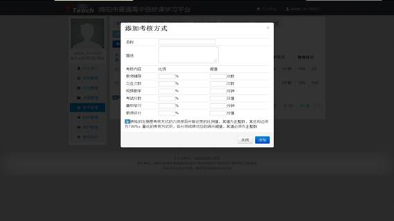
图3-16 教务管理－考核方式管理－添加考核方式
点击名称可以编辑已有考核方式信息，注意各项值必须为正整数，比例总值应为100%，编辑考核方式信息如图3-17所示：
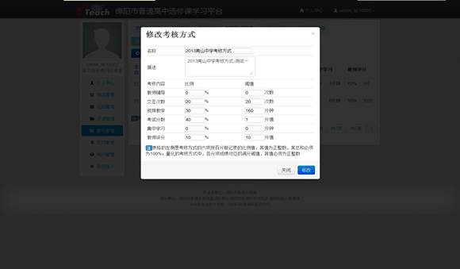
图3-17 教务管理－考核方式管理－编辑考核方式
选课时间管理主要通过让教务管理员设置开放选课时间和选课结束时间，以便于选课的阶段性控制。教务管理员选课时间管理如图3-18所示：
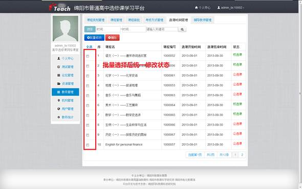
图3-18 教务管理－选课时间管理－编辑考核方式
为了方便教务管理员处理选课时间，提高效率，选课时间管理提供了批量修改操作，批量修改选课开始时间和选课结束时间，如图3-19所示：
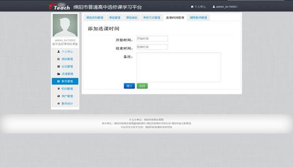
图3-19 教务管理－选课时间管理－批量处理选课时间
辅导教师管理主要通过让教务管理员更好的管理辅导老师，方便了主讲教师的与辅导教师的交流以及方便辅导老师确认对某门课程的学生的管理，可以通过机构和课程名称查看辅导教师与课程的关系。教务管理员辅导教师管理如图3-20所示：
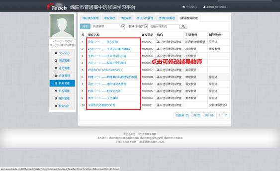
图3-20 教务管理－辅导教师管理
点击对应课程名称可以编辑辅导教师信息，更改辅导教师信息如图3-21所示：
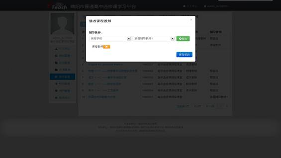
图3-21 教务管理－辅导教师管理－更改辅导教师信息
教务管理员的机构管理部分是对于所在区域下的机构的管理，便于教务管理员对于校内班级、年级的管理，具体包括：班级管理。
班级管理主要针对教务管理员本身的所负责区域内的班级以及年级的管理和控制。教务管理员班级管理如图3-22所示：
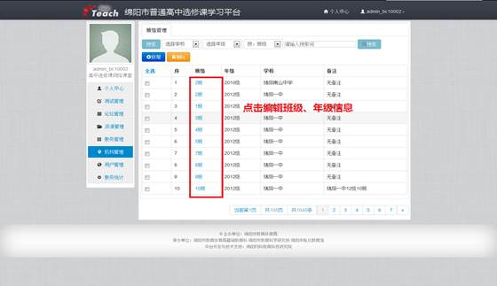
图3-22 机构管理－班级管理
点击“新增”按钮，可以选择学校、年级，新建班级信息，填写备注等。班级管理的添加如图3-23所示：
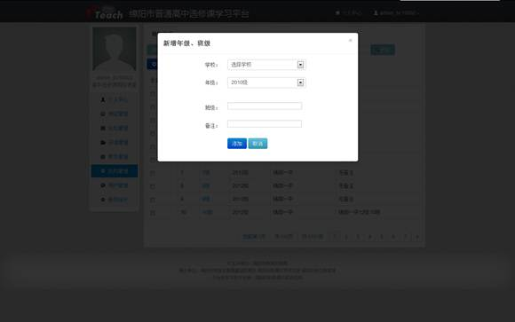
图3-23 机构管理－班级管理－添加班级信息
点击班级名称，可以编辑需要修改的各项信息。班级管理的编辑如图3-24所示：
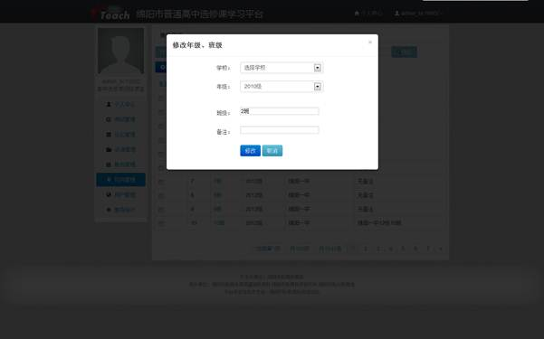
图3-24 机构管理－班级管理－编辑班级信息
教务管理员的用户管理部分是对于所在区域下的用户的管理，包括：学生管理、教师管理，方便了教务管理员对于校内学生、教师的信息管理。
学生管理主要针对教务管理员本身的所负责区域内的学生的信息材料进行管理和控制。教务管理员学生管理如图3-25所示：
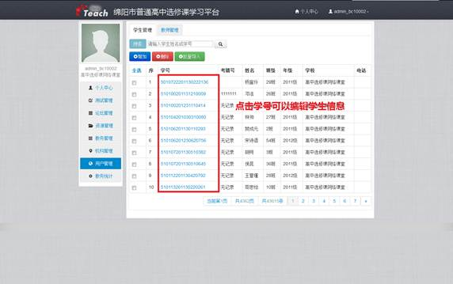
图3-25 用户管理－学生管理
点击“新增”按钮，可以新建学生用户，需要填写学号、密码、真实姓名、性别、所在年级、所在班级、用户权限、学籍号、身份证、通讯地址、联系方式、邮箱、入学年份、备注等。学生管理的添加如图3-26所示：
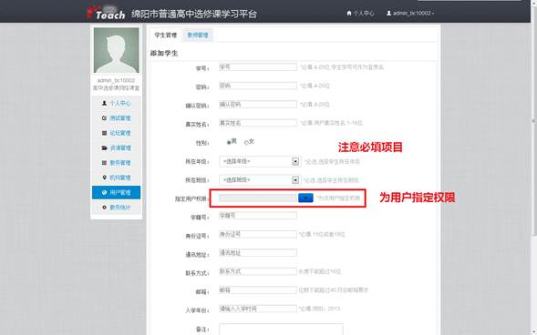
图3-26 用户管理－学生管理－新增学生
点击学生学号，可以编辑需要修改的各项信息。学生管理的编辑如图3-27所示：
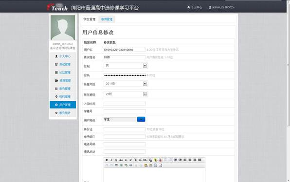
图3-27 用户管理－学生管理－编辑学生
点击主界面的“批量导入”按钮，可以大批量的导入学生信息。导入文件的格式参照模板文档。学生管理的批量导入如图3-28所示：
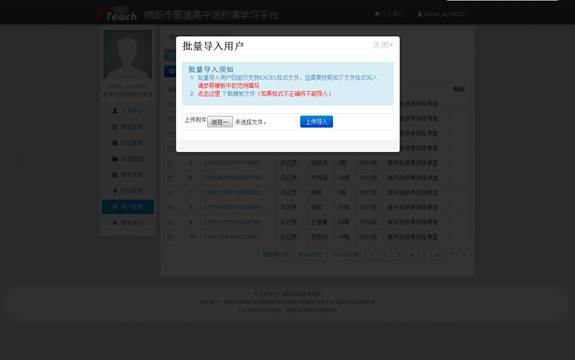
图3-28 用户管理－学生管理－批量导入学生信息
教师管理主要针对教务管理员本身的所负责区域内的教师的信息材料进行管理和控制。鼠标移至工号上可以查看教师头像，移至所授课程上可以查看教师所授课程。教务管理员教师管理如图3-29所示：
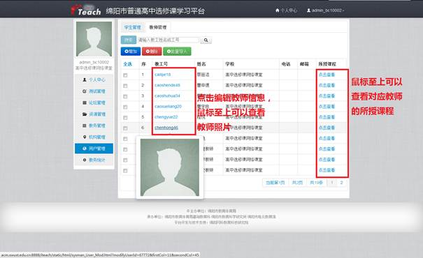
图3-29 用户管理－教师管理
点击“新增”按钮，可以新建教师用户，需要填写工号、密码、真实姓名、性别、用户权限、学籍号、身份证、通讯地址、联系方式、邮箱、头像上传、教师资料等。教师管理的添加如图3-30所示：
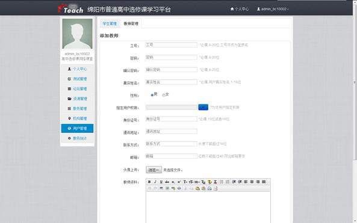
图3-30 用户管理－教师管理－新增教师信息
点击教师工号，可以编辑需要修改的各项信息。教师管理的编辑如图3-31所示：
图3-31 用户管理－教师管理－编辑教师信息
教务管理员的教务统计部分是对于所在区域下的重要教务数据作直观的统计，包括：课程选修统计、学生成绩查看、教师辅导统计等信息，方便了教务管理员对于区域内教务的各项数据的统计，各项统计还分别提供数据导出功能。
课程选修统计主要针对教务管理员本身的所负责区域内的针对课程的学生选修情况的进行统计。教务管理员课程选修统计如图3-32所示：
图3-32 教务统计－课程选修统计
点击 侧栏学习统计的“导出”，可以导出对应课程的选课信息。课程可以通过所有机构、所有课程进行筛选。教务管理员课程选修统计导出功能如图3-33所示：
图3-33 教务统计－课程选修统计－导出课程选修学生信息
学生成绩查看主要针对教务管理员本身的所负责区域内的针对课程的学生成绩情况的统计，统计结果可以导出。教务管理员学生成绩查看如图3-34所示：
图3-34 教务统计－学生成绩查看
点击“查看”成绩，可以具体查看某个学生各项指标的成绩，具体查看结果如图3-35所示：
图3-35 教务统计－学生成绩查看－查看学生具体成绩
教师辅导统计主要针对教务管理员本身的所负责区域内的针对课程的辅导教师情况的统计，具体包含：教师名称、课程代码、课程名称、学校、学生数、发帖数、答疑数，统计结果可以导出。教务管理员辅导统计如图3-36所示：
图3-36 教务统计－辅导教师统计